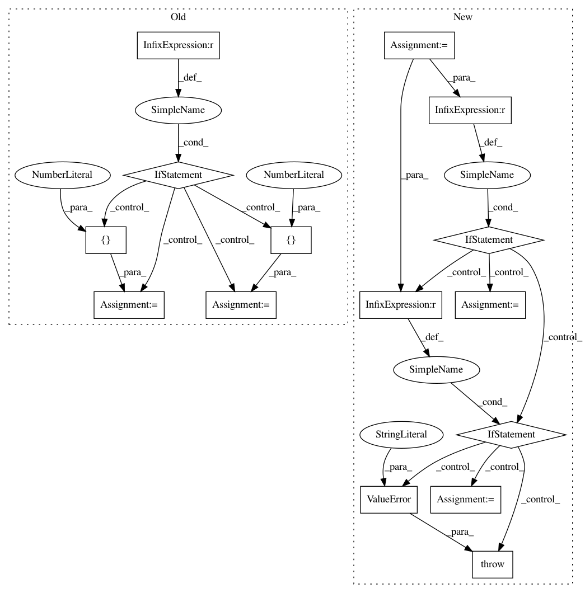

91e12bf45cc3246241b32e7e4702f2bf72f3894e,foolbox/attacks/spatial.py,SpatialAttack,__call__,#SpatialAttack#Any#Any#Any#Any#Any#Any#Any#Any#Any#Any#Any#,27
Before Change
// translate & rotate image
axes = [0, 1] if a.channel_axis(batch=False) == 2 else [1, 2]
if a.channel_axis(batch=False) == 0: // pragma: no cover
xy_shift = [0, x_shift, y_shift]
else: // pragma: no cover
xy_shift = [x_shift, y_shift, 0]
// rotate image (increases size)
x = a.original_image
x = rotate(x, angle=angle, axes=axes, reshape=True, order=1)
// translate image
After Change
del unpack
min_, max_ = a.bounds()
channel_axis = a.channel_axis(batch=False)
def get_samples(limits, num, do_flag):
// get regularly spaced or random samples within limits
lb, up = (-limits, limits) if isinstance(limits, int) else limits
if not do_flag: // pragma: no cover
return [0]
elif random_sampling: // pragma: no cover
return np.random.uniform(lb, up, num)
else:
return np.linspace(lb, up, num)
def crop_center(img):
// crop center of the image (of the size of the original image)
start = tuple(map(lambda a, da: (a - da) // 2, img.shape,
a.original_image.shape))
end = tuple(map(operator.add, start, a.original_image.shape))
slices = tuple(map(slice, start, end))
return img[slices]
x_shifts = get_samples(x_shift_limits, granularity, do_translations)
y_shifts = get_samples(y_shift_limits, granularity, do_translations)
rotations = get_samples(angular_limits, granularity, do_rotations)
transformations = product(x_shifts, y_shifts, rotations)
for x_shift, y_shift, angle in transformations:
if channel_axis == 0: // pragma: no cover
xy_shift = (0, x_shift, y_shift)
axes = (1, 2)
elif channel_axis == 2: // pragma: no cover
xy_shift = (x_shift, y_shift, 0)
axes = (0, 1)
else:
raise ValueError("SpatialAttack only supports models "
"and inputs with NCHW or NHWC format")
// rotate image (increases size)
x = a.original_image
x = rotate(x, angle=angle, axes=axes, reshape=True, order=1)
// translate image
In pattern: SUPERPATTERN
Frequency: 3
Non-data size: 15
Instances
Project Name: bethgelab/foolbox
Commit Name: 91e12bf45cc3246241b32e7e4702f2bf72f3894e
Time: 2018-10-20
Author: jonasrauber@users.noreply.github.com
File Name: foolbox/attacks/spatial.py
Class Name: SpatialAttack
Method Name: __call__
Project Name: nipy/dipy
Commit Name: 3f0bd0264210e859fe4de2715e321cbaed327c85
Time: 2017-07-28
Author: sheybani.saber@gmail.com
File Name: dipy/denoise/localpca.py
Class Name:
Method Name: localpca
Project Name: nipy/dipy
Commit Name: 71b50613bb182a263e799be300e187b840fc1572
Time: 2017-07-21
Author: sheybani.saber@gmail.com
File Name: dipy/denoise/localpca.py
Class Name:
Method Name: localpca